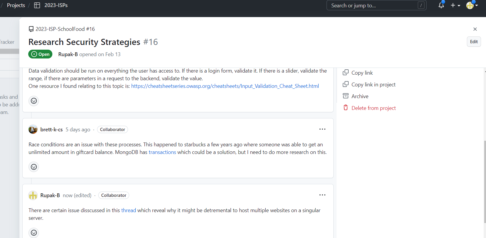

17-Apr-2023
Git Issue - Learn Jade and update LunchLink website.This is important for the continued updates and progress of the application in order to ensure that it can be continuly called upon and trusted. My main tasks will be updating the information and creating a sutible webpage
Git Issue - Research Security StrategiesThis is important to make sure that our users information is secure which is why I will be researching security strategies during the week.
Part II
 Git Issue - Research Security Strategies Git Commit - fixing website
Git Commit - fixing website
The security strategies that were researched will help add to the integrety of our website. I am also in the process of designing an elegant About Us page; however, I didn't get the most time this week as I had a confrence in Houston and will hope to finish the project in the comming days.
10-Apr-2023
Technical Challenges
The main technical challenges I faced was learning and using Jade. Since we have fallen behind on our ISP I have begun working on the frontend of our website application. The application uses Jade which is new to me, so it is imparative I learn the language for the success of the project.
Scheduling Challenges
We were able to set up a meeting with most of our team memebers, but we will need to setup more meetings in the future.
Interpersonal Challenges
The interpersonal challenges were mostly subdued as our team is beginning to work cohesively which I hope will continue in the future.
SA
Git Commit - Worked on implementing the about us page.Git Issue - Having the QA download the application
Git Issue - Adding logo and contact information
3-Apr-2023
Technical Challenges
The main technical challenges we faced this week were in the production and customization of our website. The website was built using nodejs and compiling all of the skills required to create an impactful website.
Scheduling Challenges
This week three quaters of our team are going to Houston and it will be difficult for them to work on the application while competeting at the robotics competition. The need for scheduling is becoming more apparent as we are falling more behind.
Interpersonal Challenges
The interpersonal challenges have been mounting as some of our teammates have still not touched the GitHub respository. On top of this some of the team members are using others work as their significant achievements and we need to focus on this if we are to make future progress in the ISP.
SA
Git Issue - Useability of the applicationGit Issue - Adding a website
Git Issue - Adding customization
27-Mar-2023
Technical Challenges
This week we did not face any technical challenges, but learning fragmentation in the future might be one. The main technical work that was done this week was deciding as the fragmentation.
Scheduling Challenges
This week was filled with multiple events from robotics which made it difficult for our team to have meetings as a group. We are going to dedicate more time in hopes of project completion.
Interpersonal Challenges
We tried to complete certain features of the application, but many of the team members haven't finished their parts of the product but are instead taking the credit of others. It is also important that the team understand's the importance of sticking to a stict timeline as we are getting futher and futher behind schedule.
SA
Git Issue - fixing and improving user interfaceGit Issue - deciding name
Git Issue - Graphic Design of the Mock Application
20-Mar-2023
Technical Challenges
This week we were focused on looking and testing the application on the mobile applications. We have set up an android in each class period and we hope to improve on the design in the future.
Scheduling Challenges
This week was filled with multiple events from spring break which made it difficult for our team to have meetings as a group. We were still able to present our MVP during first period; however, we were unable to during second period.
Interpersonal Challenges
The team has been discussing more clarity in our goals and teamwork throughout the project. We were also all not present during the group presentation of the project, which was unfortunate because we were able to make good headway in having a clearer idea.
SA
Advertisement 1Advertisement 2
Git Issue
SchoolFood Logo
13-Mar-2023
Technical Challenges
The technical challenges we finished downloading the application on andriod phones. We then also worked on the user page. We also worked on the backend and improving the design of the application.
Scheduling Challenges
This week was filled with multiple events from spring break which made it difficult for our team to have meetings as a group. We were still able to present our MVP during first period; however, we were unable to during second period.
Interpersonal Challenges
The team has not been working or collaborating on the project as well as we hoped. Half of the team has not touched the github or the discord we used for communication.
SA
Lunch Link App LogoFinalize logo design
Finalize MVP presentation
Altered Timeline
27-Feb-2023
Technical Challenges
This week we were not focused on the progress of the App, instead we chose to work on the presentation and poster designs. We still are having issues with the login process and are weary of avioding the same mistakes that were made on the Model Schedular
Scheduling Challenges
There has now been work on the research, but it is not complete yet. We are about a month behind on that now. The Sample App / MVP is still mostly on track. The Mock App / design for the pages is done, and the code for actually deploying it to a phone isn't far behind.
Interpersonal Challenges
The team needs to be more cohesive and concetrated on our efforts. We have not set clear guildlines and this has left people straggling behind.
20-Feb-2023
Technical Challenges
This week we were not focused on the progress of the App, instead we chose to work on the presentation and poster designs. We still are having issues with the login process and are weary of avioding the same mistakes that were made on the Model Schedular
Scheduling Challenges
Our group meet a couple of times last week to discuss our MVP presentation as well as our advertisement poster.This week will just be individual working, but we hope to meet this Saturday or Sunday to benchmark where we are and what futher progress is required to finish in a timely manner.
Interpersonal Challenges
Our group has begun making progress towards better communication and progress. We have assigned the majority of the issues in Github and hope to have each group memeber complete their assigned section of the project in a timely manner.
13-Feb-2023
Technical Challenges
The team has fully begun integrating the Minimum Viable Product and some of our team memebers have begun making commits to the application. We haven't ecounter any significant challenges and we have begun creating challenges with in depth descriptions.
Scheduling Challenges
We have been able to collaborate on our MVP presentation, presenting the project itself looks to be a difficult task since the group is split between two class periods and one of our team memebers is going out of town towards the end of the week.
Interpersonal Challenges
We have been able to collaborate on some aspects of the project, but we still have some team memebers working below expectations. We were finally able to conclude our research, but we are yet to start names for the application or poster. We had assigned certain team memebers to the poster aspect due at the end of this week, yet the assigned team memebers failed to complete these tasks.
6-Feb-2023
Technical Challenges
Brett has started to encounter issues with the minimum viable product reguarding the virtual phones. Besides this initial issue Brett found we have not faced many other technical issues as we are not entirely hands on yet with developing the product. I have never worked with Android studios in the past so it may take me a while to be acustome to the software and effectively use it in making our minimum viable product.
Scheduling Challenges
This week our main issue has been understanding the Gantt chart Brett had provided and seeing what we need to acomplish at what points. We are also feeling the pain of being split between two different class periods because we can not verbaly communicate during the day about our project.
Interpersonal Challenges
We are starting to face a multitude of interpersonal challeges at this point because some of the team members have not done any work since the start of the project. Some of our team memebers have yet to post any issues or start researching any other products. Besides teh Chick fil a and McDonalds app, we have limited research from any other source which is some of these lazy group memebrs responsibility.
30-Jan-2023
Technical Challenges
We have begun the creation of the minimum viable product, but haven't had an extensive amount of time to work on it during class due to the snow and ice so we have yet to face any major technical issues.
Scheduling Challenges
This week our main issue has been the snow making difficult to communicate in-person to discuss the project as well as personal sechedules in order to work something out online.
Interpersonal Challenges
The interpersonal challenges continue to persist as some of our group members have yet to do some of the first steps of the project or communicate with the rest of the group about their confusion. We are trying to resolve this issue and hope it will be fixed next week.
23-Jan-2023
Technical Challenges
We have begun the creation of the minimum viable product, but haven't had an extensive amount of time to work on it during class due to the SQL quiz. We have also have started designing our home screen and are having debates about what it should look like.
Scheduling Challenges
With this being a difficult week for some of our students we haven't been able to meet or communicate successfully. We are also falling futher behind schedule which we need to address with all of our members.
Interpersonal Challenges
The interpersonal challenges have been plentiful in the early stages of our project. Initially one of our team members hasn't been to school in a long time. We have also had communication issues on what kinds of research is required to help build our app.
16-Jan-2023
Technical Challenges
We have not begun the creation of software for our, so thus we have not faced challenges on that front. We are however looking at what we need to achieve a minimum viable product.
Scheduling Challenges
We have our challenges communicating on meeting dates as well as planning. We are currently behind schedule on building our application, but we hope to get back on track following this weekend. Our goal is to have a minimum viable product by the end of Feburary.
Interpersonal Challenges
The only interpersonal challenge we have had is communication since we are split between two class periods. Some of our team memebers such as Hamza have also been regularly absent or out of time which has caused delays in our project.
9-Jan-2023
Technical Challenges
We have not begun the creation of software for our, so thus we have not faced challenges on that front. We are however looking at similar applications for ordering such as Chick FIl A and McDonalds. We hope that looking at these examples will provide us with the necessary features which customers may enjoy.
Scheduling Challenges
We have our GANTT chart that has our todo list with dates. We are continuing on task and have faced little to no challenges with scheduling so far. We have used Discord as our method of communication and for setting up in-person meetings.
Interpersonal Challenges
The only interpersonal challenge we have had is communication since we are split between two class periods. Brett is in second period while the rest of the team is in first period making it hard to communicate with the whole team during class. The discord we have does not have communication between all of the team members on it.
2-Jan-2023 (Only jobs this week)
Software Development Engineer
The development engineer is responsible for the creation of software alongside the modification of existing software. This position is key to the development and style of the code. The software engineer must be very knowledgeable about the syntax and purpose of code and be verbose in commenting on their code. This is my second year in computer science, which has given me ample opportunity to practice my programming skills and develop good programming habits. The struggles I would have in this project would be coding on many different parts of a project and keeping track of which system accomplished each task, but with thorough commenting, I hope to mitigate this issue.
QA Engineer
The QA engineer is someone who detects errors in the software prior to product launch. They can run and create test cases for certain parts of the program and collaborate with their peers in order to fix the errors. This role is critical to the integrity of a product since a product littered with errors looks unprofessional and gives one’s company a negative opinion. I would find my qualities somewhat suitable for this position since I would be able to extensively test our application while collaborating with my peers to solve the problem. I have minimal experience debugging the errors of others; however, I will use my external sources in order to solve these errors.
Project Manager
The person who is in charge of the management of the entire project such as keeping development on track. Their responsibilities are setting deadlines on a gantt chart and managing the resources used in the project. The project manager role suits me well because I can generally complete my assigned tasks on time. I, however, don’t have experience in guiding a team to complete a certain task in a given time. If I take on this position, I will try to set up clear dates for when tasks are due as well as what each task is composed of.
Product Manager
The person who combines both product planning and marketing to manage the entire life cycle of one project. The specific roles of this position revolve around the overall quality of the product as well as the price of said product. The product manager also plays a critical role in the marketing and market strategy of a product. I played a major role in the overall concept of the product for our ISP last year giving me ample experience in this role. The main issues I would face taking on this position would be the limited experience I have had marketing products as well as pricing them. I can combat these weaknesses by analyzing how other products are marketed and what they are priced at.
Release Engineer
The release engineer is responsible for overseeing the product to and through the release. They are tasked with documenting, enhancing, and overseeing a product directly following its release. Ensuring that a product is bug-free following its release can provide a company with a good reputation which is what we hope to obtain in SchoolFood. Although we don’t have enough members for this position, I still think we could all take part in this role since it is crucial that our product is successful after launch.